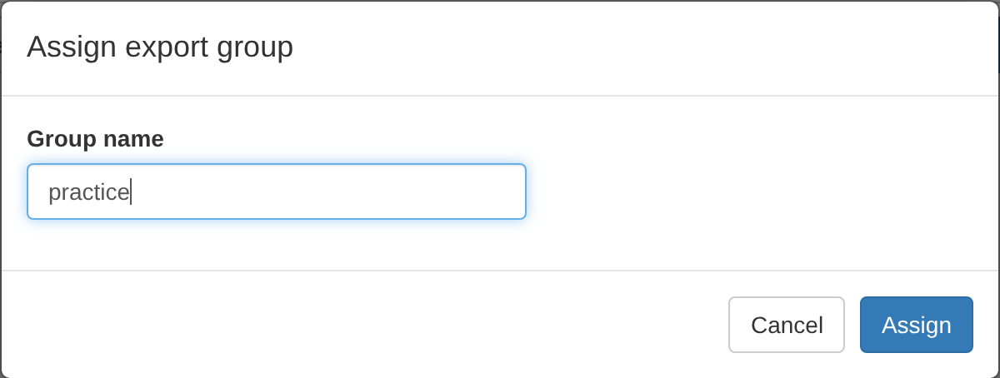
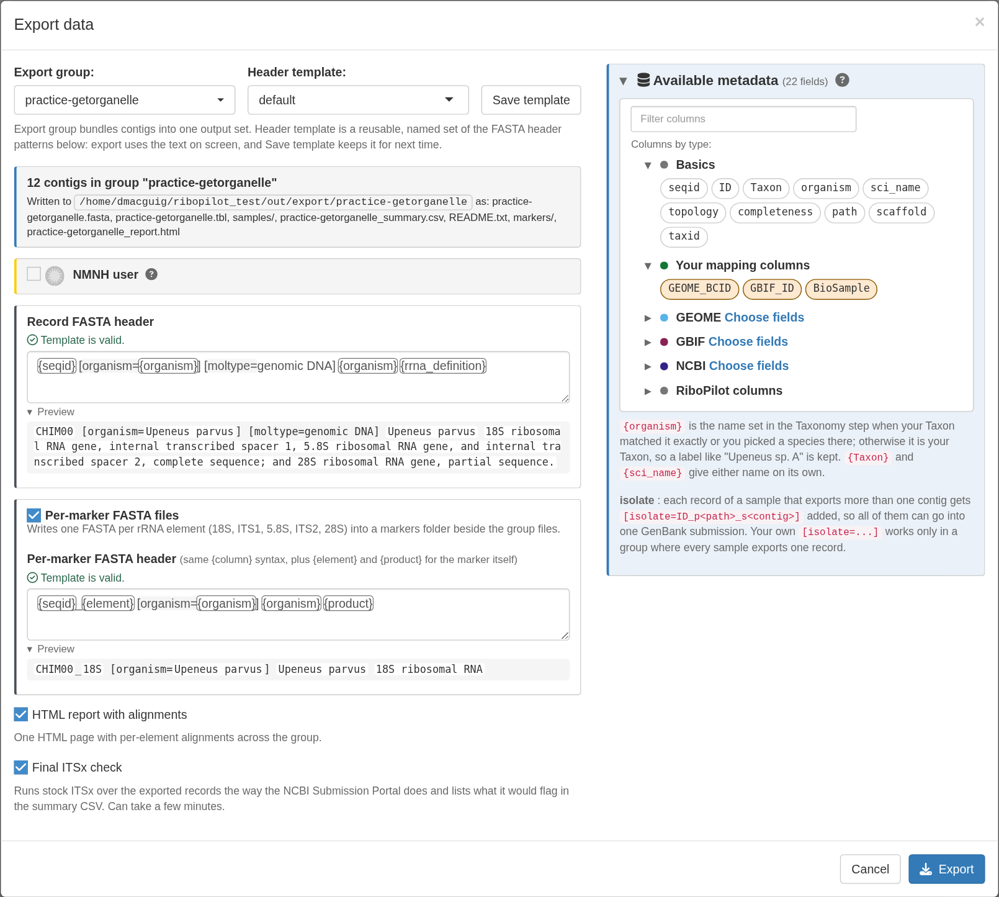
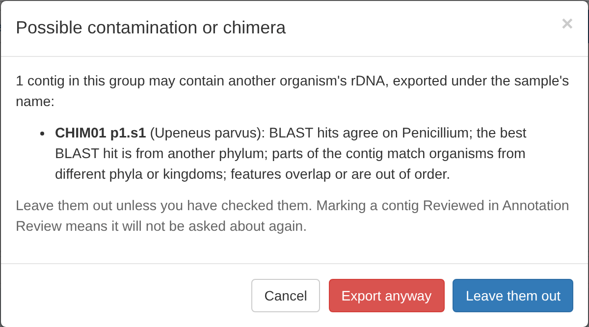
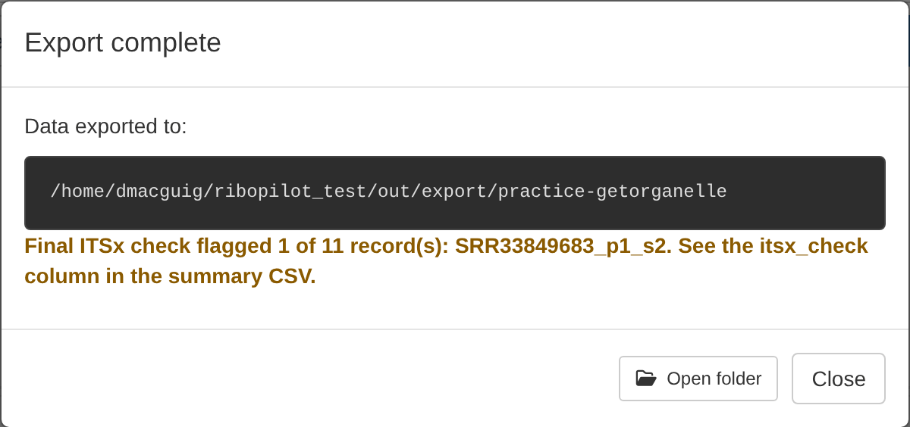

Test project: 0. Get started 1. Taxonomy 2. Reference 3. Assemble 4. Annotation Review 5. Export
Tick the contigs and press Assign Group, then type a group name. This becomes a folder name, so use only letters, digits, dot, dash, and underscore, and start with a letter, digit, or underscore.

A GenBank submission records one assembly method, so if the group
mixes assemblers, RiboPilot offers to split it by assembler. In the test
project the rescued sample was assembled with SPAdes, so a group named
practice splits into practice-getorganelle and
practice-bait.
Press Export Data, select the group, the header template, and which extra files to write:

Click the Export button to generate the files.
Before it writes anything, the Export process lists every contig that the BLAST screen or the chimera check flagged, and that you have not marked Reviewed. In the test project, CHIM01 is listed. Select Leave them out.

The export ends with a summary, which points out any records that may be a submission risk. Since we left out CHIM01, the summary only shows the ITSx warnings. See the the ITSx check for more details.

Each export group gets its own folder,
out/export/<group>/. Use the Open
folder button to see the results. For more details, see what is in
the export folder.
HYDRA Buttons that open folders. On RStudio Server, Open folder shows the export folder in the Files pane of your RStudio session.
Exporting a group again replaces its folder, but the app warns you first.
If this was a real project, we could now proceed to GenBank submission, Take a look at Preparing a GenBank submission for more details.
HYDRA Getting files off the cluster. Export runs inside the app, not as a cluster job. To submit to GenBank, first download the export folder to your own computer.